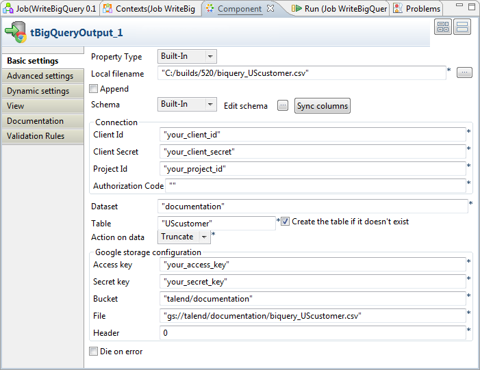
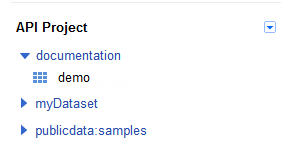

Warning
This component will be available in the Palette of the studio on the condition that you have subscribed to the relevant edition of Talend Big Data Studio.
|
Component family |
Big Data / Google BigQuery | |
|
Function |
This component writes the data it receives in a user-specified directory and transfers the data to Google BigQuery via Google Cloud Storage. | |
|
Purpose |
This component transfers the data provided by its preceding component to Google BigQuery. | |
|
Basic settings |
Schema and Edit Schema |
A schema is a row description. It defines the number of fields to be processed and passed on to the next component. The schema is either Built-in or stored remotely in the Repository. If you are using Talend Open Studio for Big Data, only the Built-in mode is available. |
|
|
Property type |
Built-in: You create and store the schema locally for this component only. Related topic: see Talend Data Integration Studio User Guide. |
|
|
|
Repository: You have already created the schema and stored it in the Repository. You can reuse it in various projects and Job designs. Related topic: see the user guide of the integration Studio. If you are using Talend Open Studio for Big Data, only the Built-in mode is available. |
|
Local filename |
Browse to, or enter the path to the file you want to write the received data in. | |
|
Append |
Select this check box to add rows to the existing data in the file specified in Local filename. | |
|
Connection |
Client ID and Client secret |
Paste the client ID and the client secret, both created and viewable on the API Access tab view of the project hosting the BigQuery service and the Cloud Storage service you need to use. |
|
Project ID |
Paste the ID of the project hosting the BigQuery service you need to use. The default ID of this project can be found in the URL of the Google API Console, or by hovering your mouse pointer over the name of the project in the BigQuery Browser Tool. | |
|
Authorization code |
Paste the authorization code provided by Google for the access you are building. To obtain the authorization code, you need to execute the Job using this component and when this Job pauses execution to print out an URL address, you navigate to this address to copy the authorization code displayed. | |
|
Dataset |
Enter the name of the dataset you need to transfer data to. | |
|
Table |
Enter the name of the table you need to transfer data to. If this table does not exist, select the Create the table if it doesn't exist check box. | |
|
Action on table |
Select the action to be performed from the drop-down list when transferring data to the target table. The action may be:
| |
|
Google storage configuration |
Access key and Access secret |
Paste the authentication information obtained from Google for making requests to Google Cloud Storage. These keys can be consulted on the Interoperable Access tab view under the Google Cloud Storage tab of the project. |
|
Bucket |
Enter the name of the bucket, the Google Cloud Storage container, that holds the data to be transferred to Google BigQuery. | |
|
File |
Enter the directory of the data stored on Google Cloud Storage and to be transferred to BigQuery. If the data is not on Google Cloud Storage, this directory is used as the intermediate destination before the data is transferred to BigQuery. | |
| Header |
Set values to ignore the header of the transferred data. For example, enter 0 to ignore no rows for the data without header and set 1 for the data with header at the first row. | |
|
Die on error |
This check box is cleared by default, meaning to skip the row on error and to complete the process for error-free rows. | |
| Advanced settings |
token properties File Name |
Enter the path to, or browse to the refresh token file you need to use. At the first Job execution using the Authorization code you have obtained from Google BigQuery, the value in this field is the directory and the name of that refresh token file to be created and used; if that token file has been created and you need to reuse it, you have to specify its directory and file name in this field. With only the token file name entered, the Studio considers the directory of that token file to be the root of the Studio folder. For further information about the refresh token, see the manual of Google BigQuery. |
|
Field Separator |
Enter character, string or regular expression to separate fields for the transferred data. | |
| Create directory if not exists |
Select this check box to create the directory you defined in the File field for Google Cloud Storage, if it does not exist. | |
|
|
Custom the flush buffer size |
Enter the number of rows to be processed before the memory is freed. |
|
Check disk space |
Select this check box to throw an exception during execution if the disk is full. | |
|
Encoding |
Select the encoding from the list or select Custom and define it manually. This field is compulsory for DB data handling. | |
|
tStatCatcher Statistics |
Select this check box to collect the log data at the component level. | |
|
Usage |
This is an output component used at the end of a Job. It receives data from its preceding component such as tFileInputDelimited, tMap or tMysqlInput. | |
|
Limitation |
N/A | |
This scenario uses two components to write data in Google BigQuery.

In the Integration perspective of the Studio, create an empty Job, named WriteBigQuery for example, from the Job Designs node in the Repository tree view.
For further information about how to create a Job, see the user guide of the Studio for integration.
Drop tRowGenerator and tBigQueryOutput onto the workspace.
The tRowGenerator component generates the data to be transferred to Google BigQuery in this scenario. In the real-world case, you can use other components such as tMysqlInput or tMap in the place of tRowGenerator to design a sophisticated process to prepare your data to be transferred.
Connect them using the Row > Main link.
Double-click tRowGenerator to open its Component view.

Click RowGenerator Editor to open the editor.
Click
 three times to add three rows in the Schema table.
three times to add three rows in the Schema table.In the Column column, enter the name of your choice for each of the new rows. For example, fname, lname and States.
In the Functions column, select TalendDataGenerator.getFirstName for the fname row, TalendDataGenerator.getLastName for the lname row and TalendDataGenerator.getUsState for the States row.
In the Number of Rows for RowGenerator field, enter, for example, 100 to define the number of rows to be generated.
Click OK to validate these changes.
Procedure 1.4. Building access to BigQuery
Double-click tBigQueryOutput to open its Component view.
Click Sync columns to retrieve the schema from its preceding component.
In the Local filename field, enter the directory where you need to create the file to be transferred to BigQuery.
Navigate to the Google APIs Console in your web browser to access the Google project hosting the BigQuery and the Cloud Storage services you need to use.
Click the API Access tab to open its view
In the Component view of the Studio, paste Client ID, Client secret and Project ID from the API Access tab view to the corresponding fields, respectively.
In the Dataset field, enter the dataset you need to transfer data in. In this scenario, it is documentation.
This dataset must exist in BigQuery. The following figure shows the dataset used by this scenario.
In the Table field, enter the name of the table you need to write data in, for example, UScustomer.
If this table does not exist in BigQuery you are using, select Create the table if it doesn't exist.
In the Action on data field, select the action. In this example, select Truncate to empty the contents, if there are any, of target table and to repopulate it with the transferred data.
Procedure 1.5. Building access to Cloud Storage
Navigate to the Google APIs Console in your web browser to access the Google project hosting the BigQuery and the Cloud Storage services you need to use.
Click Google Cloud Storage > Interoperable Access to open its view
In the Component view of the Studio, paste Access key, Access secret from the Interoperable Access tab view to the corresponding fields, respectively.
In the Bucket field, enter the path to the bucket you want to store the transferred data in. In this example, it is talend/documentation
This bucket must exist in the directory in Cloud Storage

In the File field, enter the directory where in Google Clould Storage you receive and create the file to be transferred to BigQuery. In this example, it is gs://talend/documentation/biquery_UScustomer.csv. The file name must be the same as the one you defined in the Local filename field.
Note
Troubleshooting: if you encounter issues such as Unable to read source URI of the file stored in Google Cloud Storage, check whether you put the same file name in these two fields.
Enter 0 in the Header field to ignore no rows in the transferred data.
Procedure 1.6. Getting Authorization code
In the Run view of the Studio, click Run to execute this Job. The execution will pause at a given moment to print out in the console the URL address used to get the authorization code.
Navigate to this address in your web browser and copy the authorization code displayed.
In the Component view of tBigQueryOutput, paste the authorization code in the Authorization Code field.